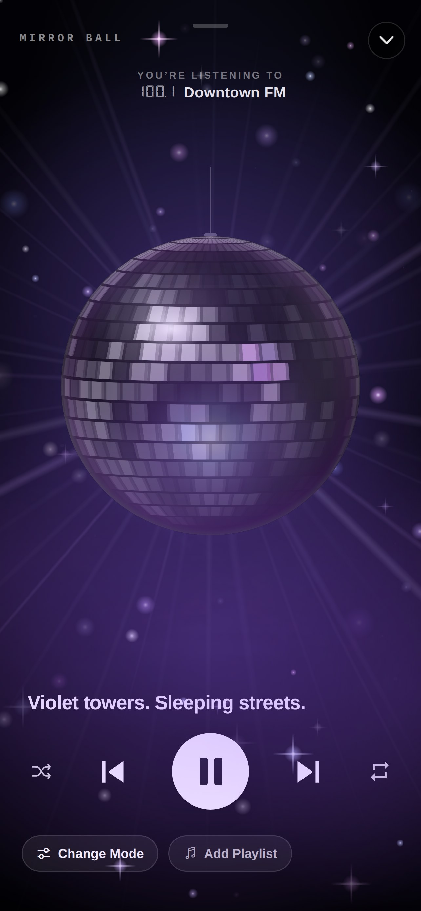
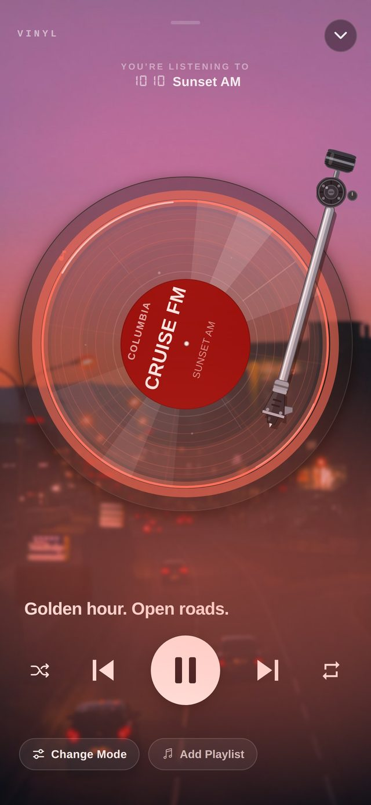
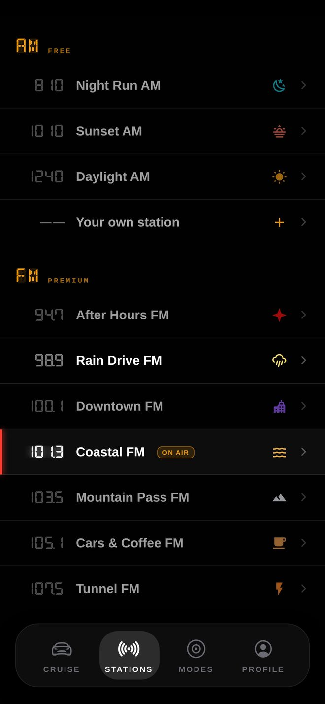
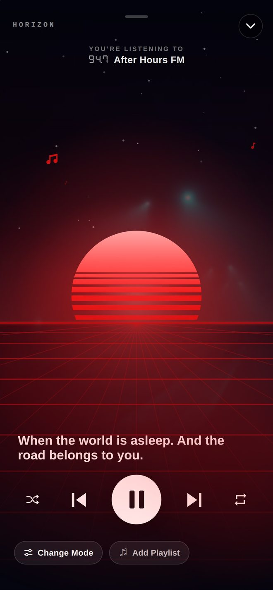
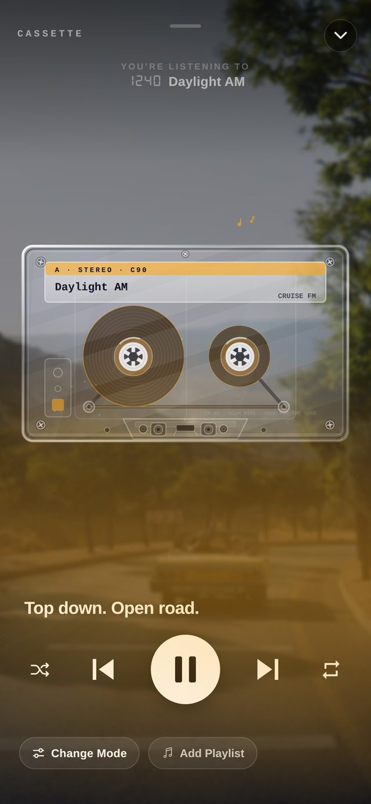
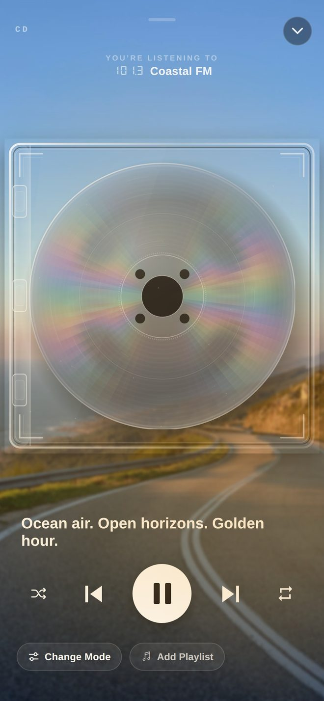
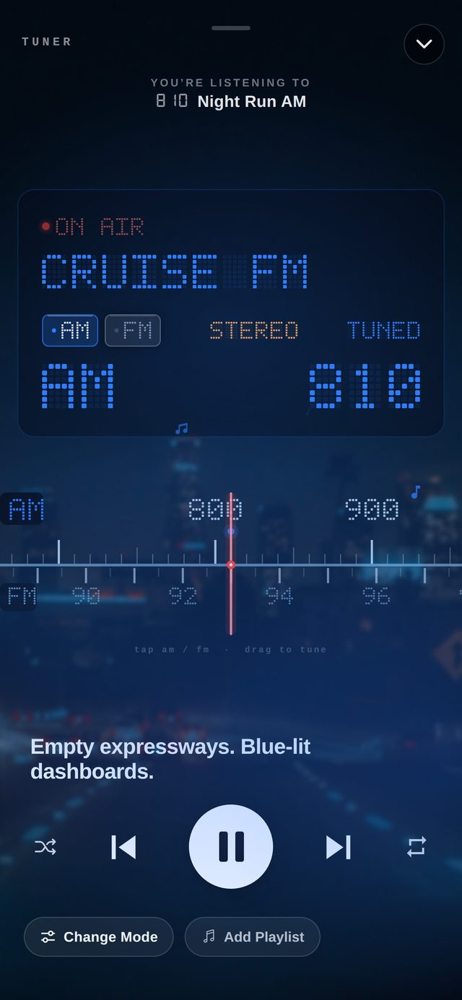
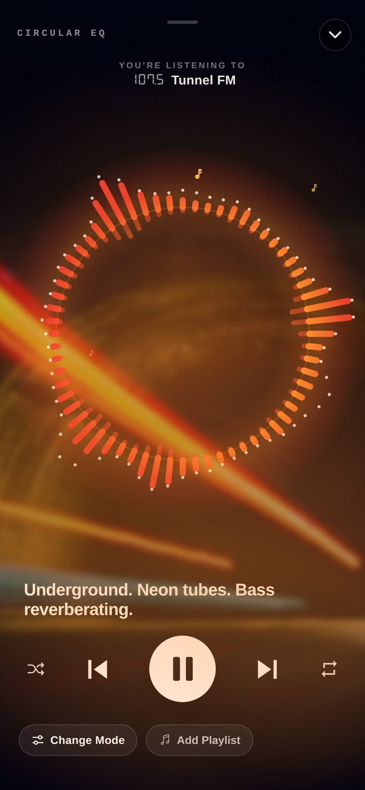
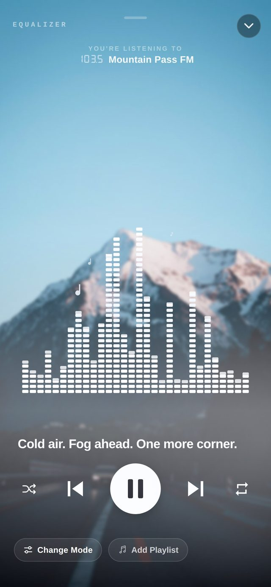

Spotify organises music by artist.
Cruise FM organises it by how a drive feels.
Free to download — no account, no ads. Premium unlocks every mode and mood, free for 7 days.
Straight from the app
Real screenshots, real songs, zero mock-ups. Swipe through.









← swipe →
Eight ways to watch your music
Your playlist becomes the soundtrack. Cruise FM becomes the film. Eight full-bleed, glowing modes — three of them free, the rest on a 7-day trial.
A living spectrum, tinted to your station.
Reels turning. Nostalgia at 70 mph.
Your track, pressed in vinyl. Real grooves, real light.
Drag a real FM dial between moods.
A hollow ring of bars, breathing with the beat.
A retrowave sunset, receding into the road ahead.
Chrome facets, catching the light as it turns.
A disc behind clear plastic, diffraction and all.
Ten moods, one tap
Link your own Apple Music playlist to any station. Hit Start Drive. That's the whole idea.
Six tiles, eight looks
Press and hold the Home Screen, add a Cruise FM tile, and press and hold it again to choose what it draws. Two of them come in a big size as of the latest update.
Your mode as an object — mirror ball, CD, or a record with its arm.
The last song you heard, in a desktop CD player, a pocket player, or a torn ticket.
Your station as a record, with the last song on the label.
Whichever station is broadcasting this hour — and what’s on after it.
Your last station, one tap away. Long-press to pin it to a mood.
The station broadcasting now, on your Lock Screen.
The early drivers
The Founder badge closed on 15 September 2026 — a permanent cosmetic on their profile that will never be sold, unlockable, or offered again. That was the promise, and it holds.